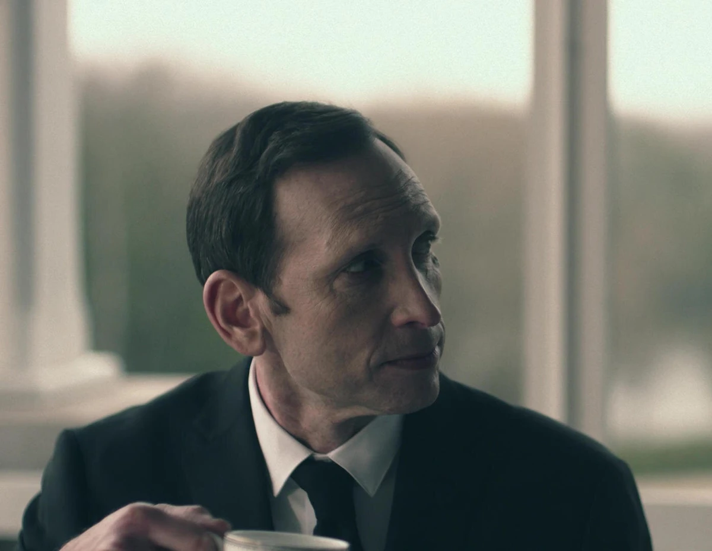
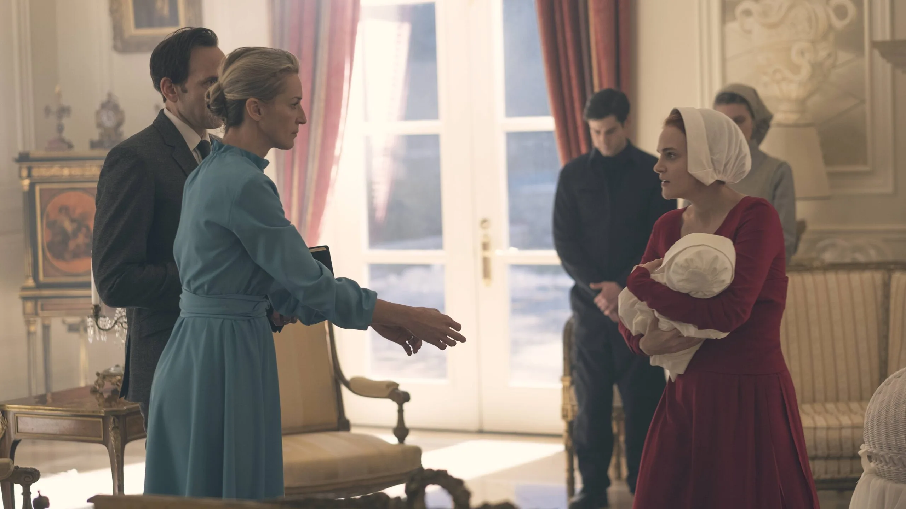
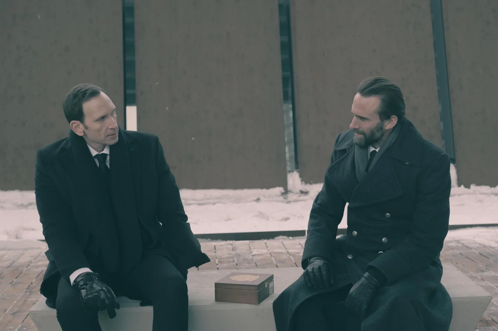

El Régimen De Gilead
Comandante Warren Putnam

Warren Putnam
Abuso de poder y disputas internas de Gilead
Warren Putnam pertenece a la alta esfera política y militar de Gilead. Es interpretado por Stephen Kunken.
Su historia representa la rigidez, el abuso de poder y las consecuencias de las disputas internas entre los líderes del régimen.
Relación con Janine y castigo
Warren fue el primer comandante al que asignaron a Janine Lindo bajo el nombre de Dewarren. Durante esa etapa nació una niña a la que los Putnam llamaron Ángela.
Por la relación abusiva y la manipulación ejercidas sobre Janine, el Consejo lo declaró culpable de adulterio y ordenó la amputación de su mano izquierda.
A pesar del castigo, Putnam conservó su influencia y se convirtió en la mano derecha de Fred Waterford. Tras ejecutar la orden de arrestar a Ray Cushing por traición y apostasía, fue promovido como jefe de Seguridad de Gilead.

Ascenso político y caída

Jefe de Seguridad
La caída de Cushing permitió que Putnam recuperara una posición central en el Consejo y asumiera el control del aparato de seguridad.
Abuso de Esther y ejecución
En la quinta temporada violó a la joven criada Esther Keyes y la dejó embarazada.
El régimen consideró el acto una falta contra sus leyes sagradas: Putnam fue arrestado y ejecutado por apostasía.
Momentos decisivos
Hitos del poder y la caída de Putnam
-
01
Castigo por adulterio
El Consejo ordena la amputación de su mano izquierda por el abuso y la manipulación de Janine.
-
02
Jefatura de Seguridad
Recupera su influencia y asciende tras participar en el arresto de Ray Cushing.
-
03
Arresto y ejecución
Es condenado por apostasía después de violar y dejar embarazada a Esther Keyes.